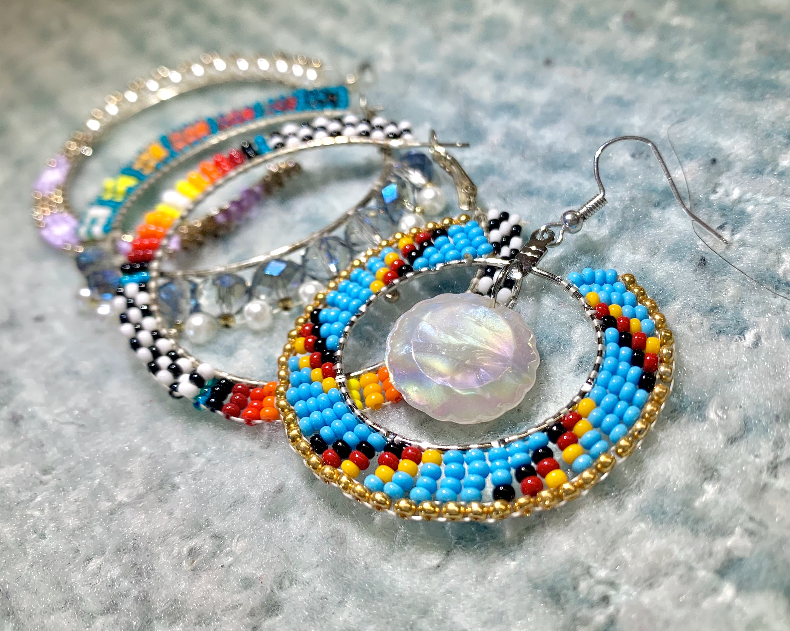
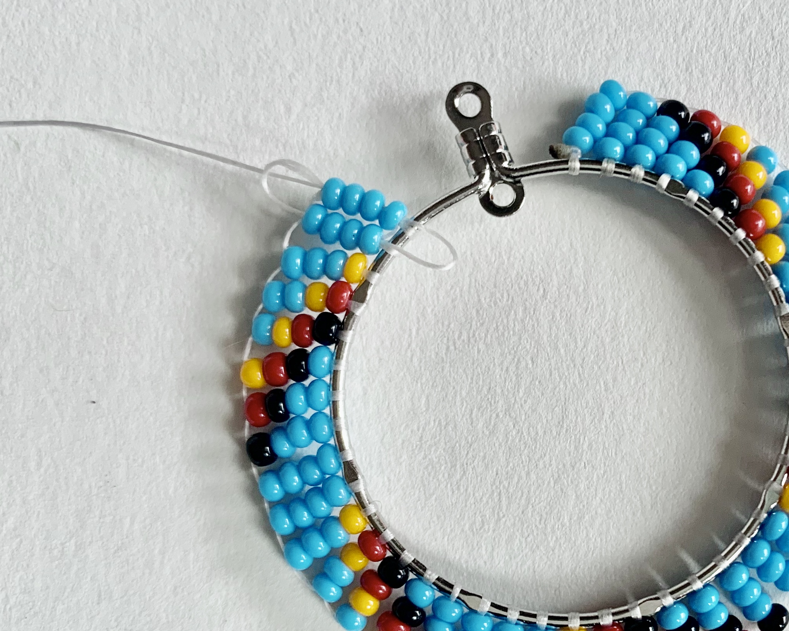
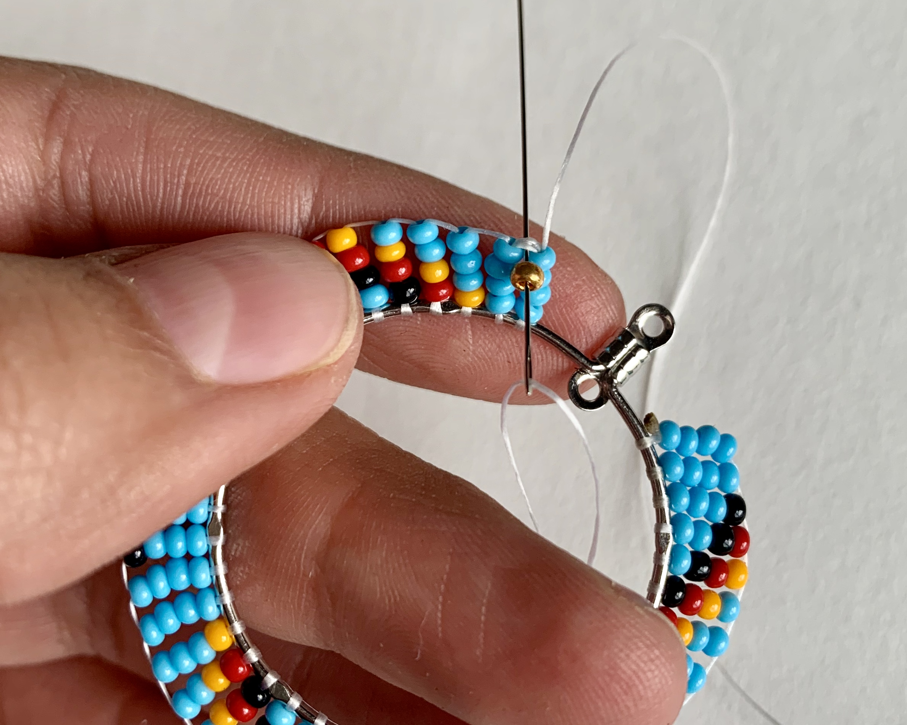
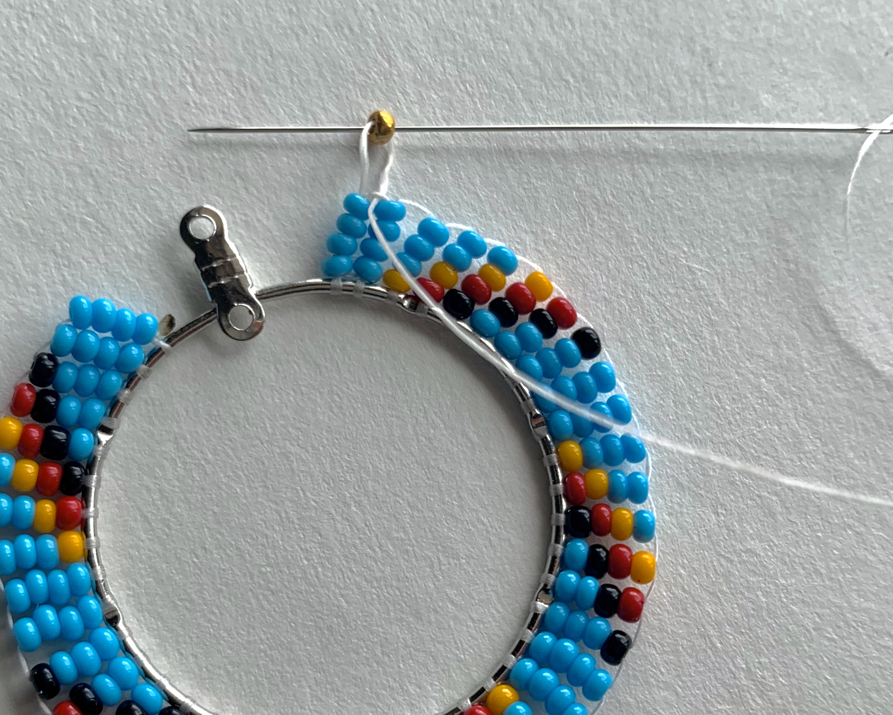
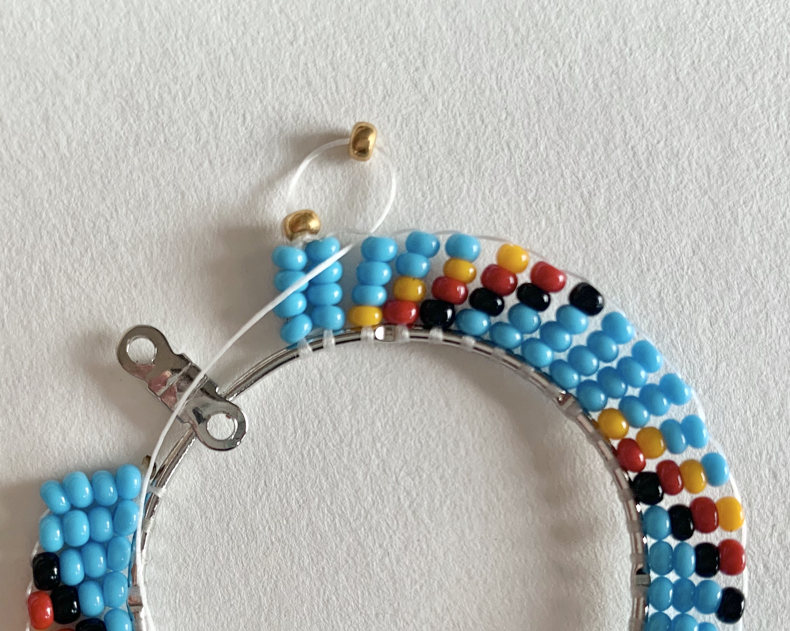
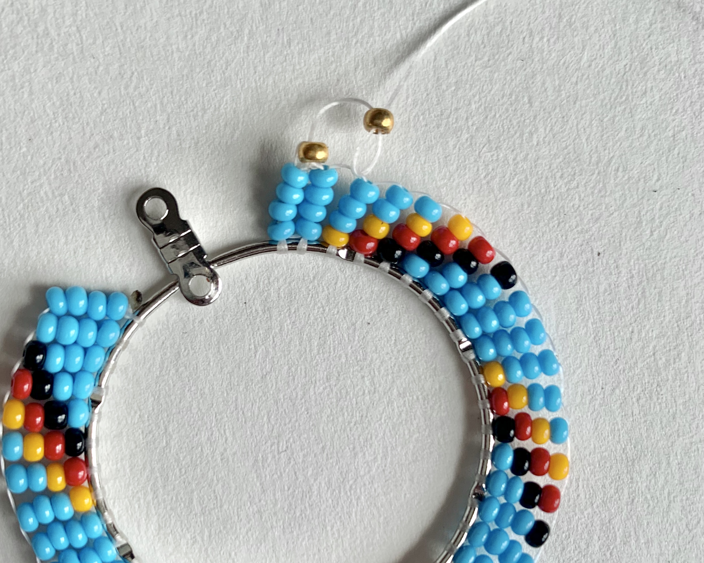
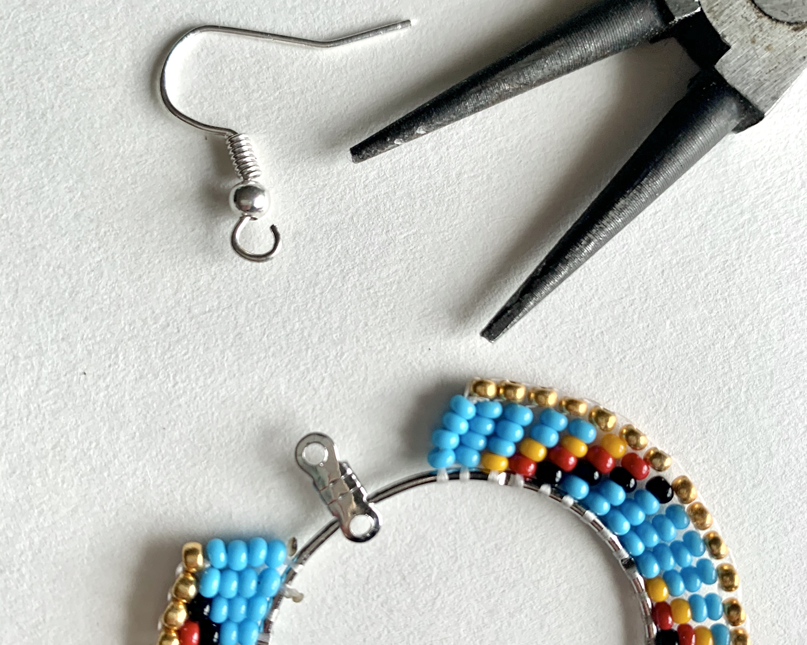
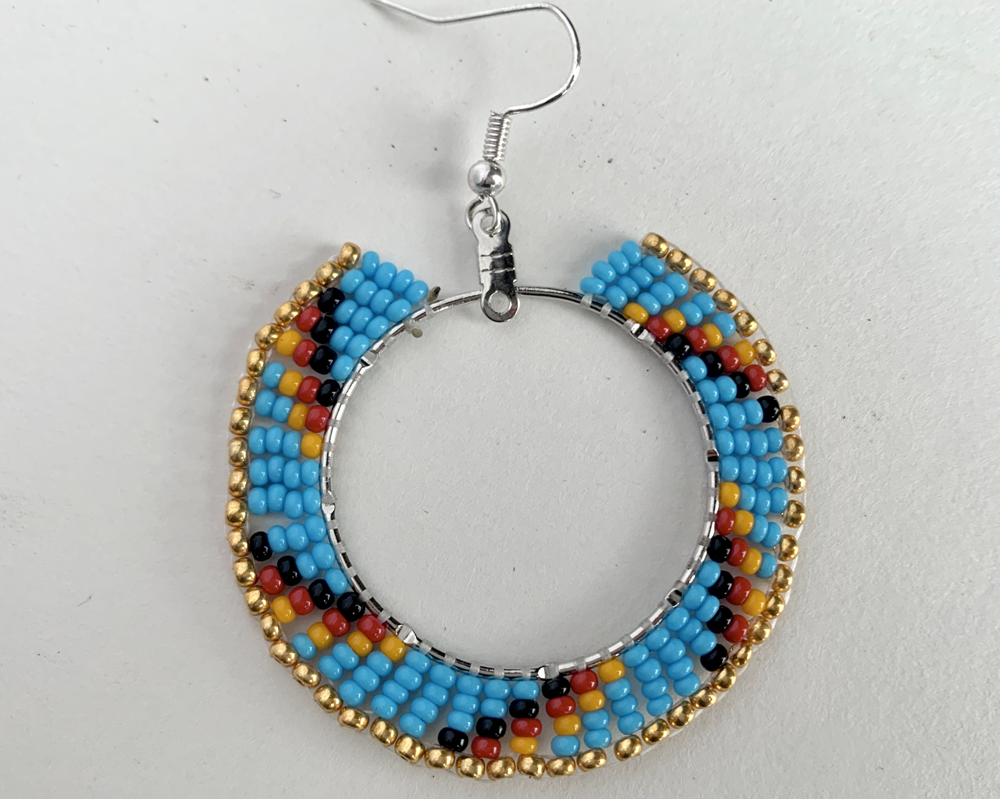
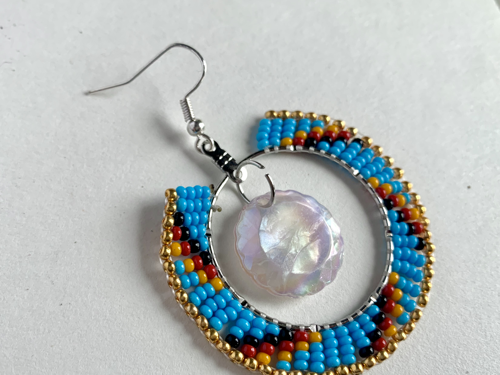

How To: BEADED HOOP EARRINGS
by Winddancer George

Welcome to my first webpage! It's cute, isn't it!? It may be a little rough around the edges, so take it with a
grain of salt, because this page was as much of a learning experience for me, as this page will be for you. The
only difference being that I’m learning web design, and you’re here to learn about beadwork!
Materials Needed

- beading needle
- beading thread
- good quality seed beeds (size 10 is a good starting point)
- beeswax
- jewelry hoops
- ear hooks
- jewelry pliers
- scissors
- lighter
You can find a lot of these supplies at the links below:
iBead Canada
Beaded Dreams: Craft Supplies
Instructions
- To start, you will need to cut a section of thread, a full arms length should be enough. Once you have the thread cut you can then start coat the thread with beeswax. You can do this by pulling the thread across the beeswax. Doing this treats the thread to make it stronger and last longer against wear, weather and water. Once the thread has been treated you can then string the needle. The needle should specifically be a beading needle, regular sewing needles can be too bulky and won't fit through the beads, which will cause problems in the future.
- Next you’ll need to tie the thread to the hoop. Cut off long excess string until about half an inch remains. Burn the remaining thread down using a lighter, the result should be a tiny ball of burned nylon. You'll need to be careful when doing this, because you could end up burning more string than you had planned on. I would test it on another piece of thread first. Doing this will prevent the knot from ever coming loose.
- Now is your time to get creative with colors. As a beginner I would recommend starting with just a couple colors until you get a good feel for it.
- Next you will need to add 8 beads onto the string.
- Here, your going to have to pass your needle through the hoop, and insert the needle back up through the last four beads. To ensure that its done correctly, you should notice the thread and needle on opposite sides of the hoop, as shown in the photo below.
- This is what the result should be.
- This time, instead of adding 8 beads, we are going to add 4 beads. Once again, pass your needle through the hoop and back through the 4 beads.
- Repeat this all the way around the hoop, you can switch up any colors you would like, and experiment with different color combinations. To end it off you go back through the last two rows a couple of times. This creates a tight fit, so the thread remains tight in place. You can then knot off the thread and burn it into place, and if you like, you can finish here. Or you can continue on and add a little extra! If you wish to continue, don't knot off and burn.
- My earrings were looking a little plain for my taste, so I wanted to add a nice gold border. This proccess is identical to beading the hoops, but instead of beading around the hoop, we will be beading around the open pieces of thread. Start off by adding just one bead to the string and push the needle through the open piece of thread in between the rows of beads.
- Just like with beading the hoops, go up through the bead again.
- Repeat proccess. Add bead, and pass the needle through the open thread between the rows of beads.
- Go up through the bead. Repeat the process all the way around.
- Once finished you will need to tie it off. To do this push you needle through the previous gold bead and also down the closest row of beads. With the thread at the base of the hoop tie a knot around the hoop and burn off. There are many differnt methods for ending off a project like this, but this is what works for me. To add the earring hook, use a pair of jewelry pliers to open the loop on the bottom of the earring hook. Once the hoop is open add it onto hoop and close again with the pliers.
- At this point you could consider the earring done and wearable!
- This step is totally optional, but I noticed this jewelry hoop had a attachment hoop, so I used a tiny open hoop to attach a jewel and then closed it off again.



"





